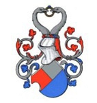

Antavla
3992204 Vesti Gjordsen Drefeld

Far:
Gjord Jensen Drefeld (1382? - >1404)
Mor:
Margarete Jensdatter Egeside (>1400 - )
Född:
omkring 1415 Skåne, Sverige.
Barn med ?
Barn:
Gjord Vestisen Drefeld (1440? - )
Personhistoria
Årtal
Ålder
Händelse
1415?
Födelse omkring 1415 Skåne, Sverige
1440?
Sonen
1996102 Gjord Vestisen Drefeld
föds omkring 1440 Skåne, Sverige
1475?
Barnbarnet
998051 Ellen Drefeld
föds omkring 1475 Skåne, Sverige